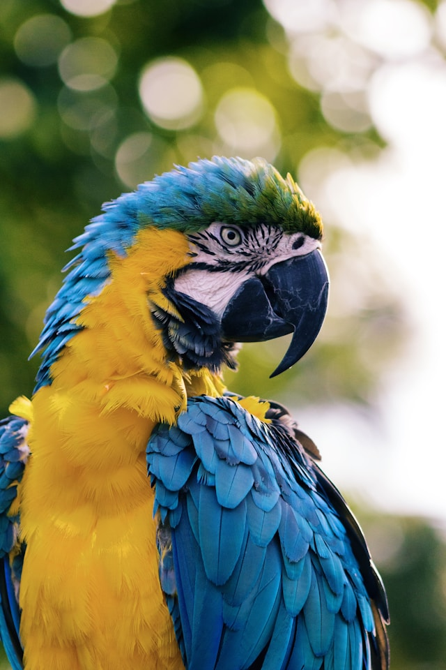
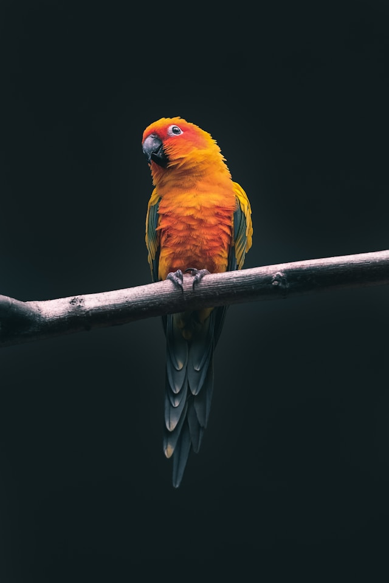
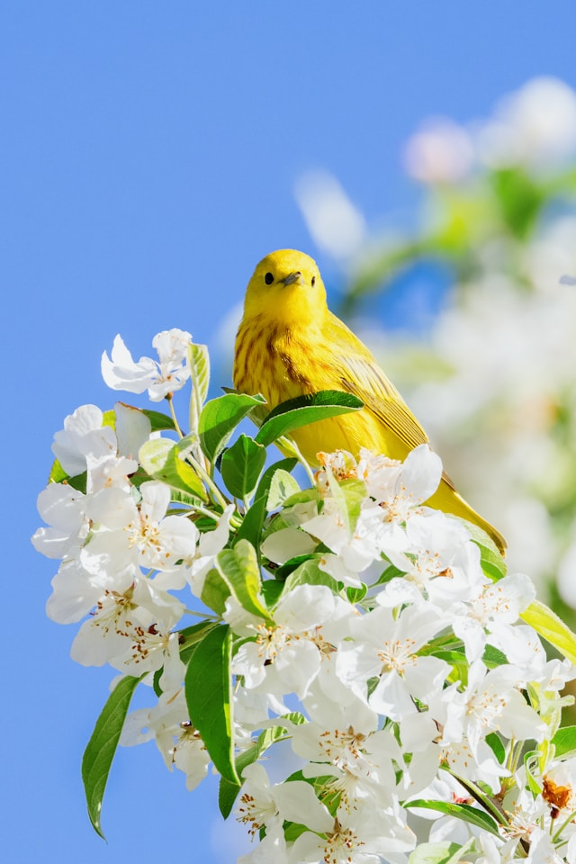

Guacamayo azul y amarillo (Ara ararauna), también conocido como guacamayo azul y dorado, caracterizado por su brillante plumaje superior azul, su parte inferior de color amarillo intenso y su potente pico negro.

Cotorrita del sol (Aratinga solstitialis), también conocida como conure del sol o perico dorado, posada sobre una rama con un llamativo plumaje de tonos amarillos y anaranjados intensos.

Reinita amarilla (Setophaga petechia / Setophaga aestiva), un pequeño pájaro cantor de brillante plumaje amarillo con sutiles estrías castañas en el pecho, posado alegremente sobre un ramo de flores blancas de primavera contra un cielo azul despejado.